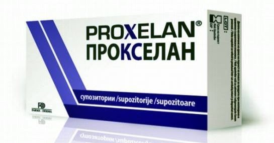
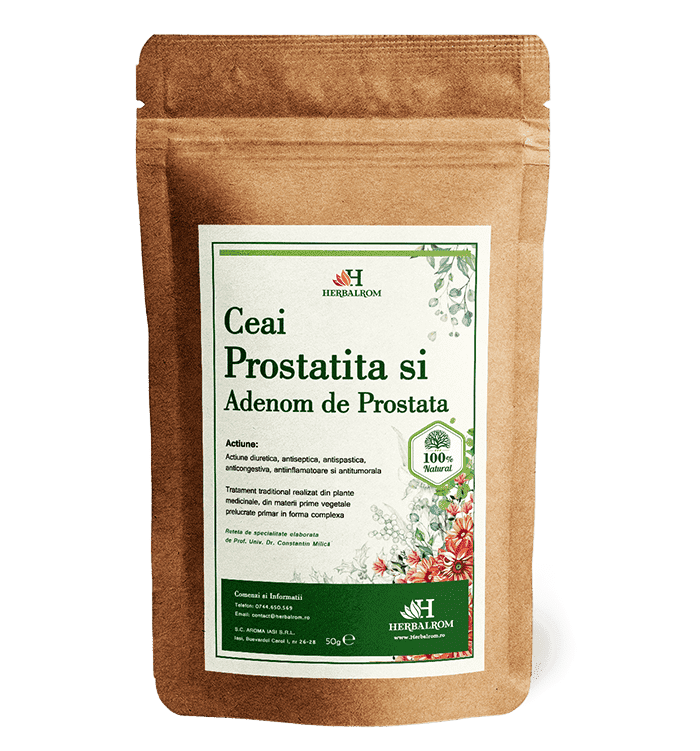

Prostatitele si Uretrita | Disfunctii Sexuale Masculine
2020.10.01 22:57
Disfunctii Sexuale Masculine
TRATAMENTE IMPOTENTA-EJACULARE PRECOCE-ERECTIE SLABA
Menu Skip to content Home Afectiuni Anatomie Proceduri Medicale ContactProstatitele si Uretrita
2 RepliesProstatita este o inflamatie a glandei prostatei. Exista multe forme de prostatita, dar vom insista pe doua dintre ele: acute si cronice . Prostatita acuta – este de fapt perioada de debut a afectiunii. Prostatita cronica apare in cazul in care oamenii tolereaza afectiunea fara a apela la medic si in termen de 3-6 luni prostatita intra in faza cronica . Apar modificari ireversibile, cum ar fi kaltsenaty, fibroza, care vor insotii barbatul in cauza toata viata. Daca cei afectati nu merg la medic mai apar si alte schimbari in structura glandei prostatei si astfel, creste semnificativ riscul de inflamare acuta.
Nu exista categorie de populatie mai expusa la aceasta afectiune, boala apare indifferent de varsta, ocupatie, mediu urban sau rural. Totusi barbatii care au deja 30-40 de ani sunt mai expusi datorita bagajului acumulat in timp. Din pacate, prostatita poate sa apara si de la 16 ani!
Viata sexuala ar trebui sa fie absolut normala! Exista si categorii de risc care includ pe acele persoane a caror activitate are legatura cu calatoriile lungi, cum sunt marinari si soferii. Viata lor sexual este saraca si neregulata, ceea ce duce la stagnarea glandei prostatei si astfel este cauzata prostatita. De asemenea sunt expusi acestui risc si cei care (de obicei, prin natura muncii) stau foarte mult timp in frig, de exemplu, muncitorii din constructii, lucratorii rutieri, vanzatorii stradali. Hipotermiile persistente, de asemenea, pot duce la un diagnostic de prostatita.
Avand in vedere statisticile clinicii On, primul loc in lista cauzelor prostatitei il au bolile cu transmitere sexuala.
Prostatita se poate dezvolta si ca o complicatie in urma tratarii unor boli cum sunt boala catarala SARS, gripa, dureri in gat.
Putem spune ca motivele principale pentru aparitia si dezvoltarea de prostatita sunt infectia, hipotermia, si complicatii dupa alte afectiuni, precum si stagnarea organelor pelviene, care se datoreaza relatiilor sexuale rare, sau abstinentei.
Cand apare inflamarea prostate apar si dureri, urinare frecventa, deteriorarea calitatii vietii sexuale. Durerea poate fi foarte diferita: durere in perineu, in zona suprapubiana, durerea poate ajunge si la anus. Apoi, exista nevoia frecventa si disconfortul urinarii in timpul noptii. Frecventa relatiilor sexuale devine din ce in mai mica, exista probleme cu erectie.
In cazul in care prostatita este cauzata de infectie, puteti obtine complicatii, cum ar fi vizikulit, epididimita si, in cel mai rau caz o sterilitate completa.
Cea mai buna prevenire a prostatitei vizite regulate la urolog. Nimeni nu ar putea argumenta faptul ca prevenirea nu este intotdeauna preferabila tratamentului. In mod constant trebuie facuta o verificare in ce priveste problemele urologice, optim este o data cu varsta de 30 de ani. Cel putin o data pe an ar trebui sa avem o astfel de vizita la urolog.
Dupa 40 de ani – este recomandat ca vizita sa fie facuta la fiecare sase luni, pentru a efectua o ecografie pentru prostata, o data pe an pentru analizele de sange (PSA).
De asemenea, masurile de prevenire includ: sex cu regularitate si in conditii de siguranta, sport si desigur, examinarile medicale periodice.
Prostatita acuta
Procesul de prostatita acuta inflamatoare incepe cu mucoasa din conductele de excretie a lobilor glandulari ai prostate si continua cu inflamarea conductelor de etansare. Infectia patrunde in segmente de tesuturi si formeaza mai multe pustule mici. Uneori, pustulele fuzioneaza intr-una mai mare si poate da nastere unui abces al prostatei. Abcesul poate sa strapunga in organele vecine vezica urinara, rect sau uretra. La inceputul bolii barbatul are o urinare mai frecventa noaptea. Urinarea este insotita de senzatii dureroase. In cursul procesului durerea de perineu se intensifica si isi mareste aria de la capul penisului la anus. Urinarea devine din ce in ce mai fregventa. In momentul in care prostata a format pustule, temperatura corpului se ridica la 39-40 de grade fara sa existe frisoane, febra, slabiciune. Apar dureri la urinat si defecatii puternice.
Diagnosticul de prostatita acuta.
La examinarea manuala a prostatei se va detecta o crestere a acestuia si veti simtii o durere ascutita. In cazul in care prostata a format abcese, durerile sunt trepidante. In cadrul exminarii lichidului prostatic se va identifica un numar mare de celule albe si bacterii.
Tratamentul prostatitei acute.
Pacientii trebuie sa faca repaus la pat si sa urmeze un regim alimentar. Imediat vor urma un tratament antibacterian, se va folosi un spectru larg de antibiotice, iar impotriva durerii puternice se vor administra analgezice. De asemenease vor folosi aplicatii de caldura si proceduri de fizioterapie in zona inghinala. In cazul in care exista un abces de prostate se va elimina prin interventie chirurgicala.
Aplicarea unui tratament in timp util favorizeaza vindecarea completa. Dar daca nu se aplica un tratament de prostatita acuta si daca acesta nu a fost corespunzator, protatita acuta va evolua in forma cronica.
Prin urmare, fiecare barbat de peste 40 de ani ar trebui sa stie ca probabilitatea de aparitie a bolii prostatei este foarte mare. Si inca de la primele simptome ar trebui sa solicite asistenta medicala imediata.
Prostatita cronica
Prostatita cronica apare ca rezultat al prostatitei acute . Acest proces inflamator are loc incet si imperceptibil. Treptat tesutul inflamat, formeaza cicatrici mici in tesutul prostatei , prevenind scurgerea de secretie. Existenta prelungita a prostatitei poate duce la cancer. Prostatita cronica poate fi cauzata de microorganisme. In plus, prostatita cronica poate sa apara fara infectie. Cauzele acestui fenomen sunt cancerul de prostata si tulburari circulatorii. In cazul infectiei apare prostatita concomitenta .
Manifestarile la prostatita cronica sunt mai putin vizibile decat la prostatita acuta si se manifesta prin dureri in perineu, sacrum, vulve, rect. Uneori exista disconfort in uretra in timpul urinarii de dimineata. Pacientii afectati au performante sexual scazute, insomnia si dureri de cap.
Diagnosticul de prostatita cronica este realizat pe baza examinarii de prostata cu degetul, studii de laborator, examinarea lichidului prostatic, analize de urina. Examinarea ecografica dezvaluie contractia de prostata, eterogenitatea si structura sa.
Tratamentul complex pentru prostatita cronica .
La detectarea procesului de infectie este administrat tratamentul cu antibiotice. Pacientului ii este recomandat sa mentina un stil de viata activ, precum si excluderea bauturilor alcoolice si alimentelor picante.
Uretrita este procesul inflamator localizat in peretele uretrei . Uretritele sunt primare, in cazul in care procesul inflamator incepe direct in peretele uretrei si secundare, in cazul in care infectia patrunde in uretra de la alte organe. De obicei, infectia ia nastere acompaniata de prostatita, cistita, pielonefrita, boli inflamatorii ale organelor genitale .
Infectarea uretrei in cazul uretritei primare se trensmite de multe ori in timpul actului sexual.
Share this:
Twitter FacebookLike this:
Like Loading...Related
This entry was posted in Afectiuni on August 14, 2013 by artfreak80 .Post navigation
← Cancerul Vezical Cancerul de prostata2 thoughts on “ Prostatitele si Uretrita ”
viopop May 6, 2014 at 1:38 pmbuna ziua ! prostatita cronica se poate manifesta prin dimensiuni mult crescute ale prostatei?
Reply ↓ artfreak80 Post author May 6, 2014 at 2:55 pmBuna Ziua,
Apelati 021 301 76 76
Numar cu tarif normal!
Reply ↓Leave a Reply Cancel reply
Blog at WordPress.com. %d bloggers like this:- Prostatita - tratament naturist - SanatateCuPlante
- Prostatita: Generalitati, Factori de risc si Tratament
- PROSTATA - Perne pentru hemoroizi, afectiuni anale, dureri ...
- Prostata: cele mai comune boli ale acesteia si ...
- Prostatita acută - cauze, simptome, diagnostic şi ...
- Prostatia cronica - Actinmed
- Adevărul despre Prostero – preț, păreri, forum, prospect ...
- Prostatita | Prostenal
- Prostatita - medicover.ro
- PROSTATITELE - rasfoiesc.com
- Prostatita - tratament naturist - SanatateCuPlante
Prostatita acuta este o infectie a prostatei si poate reprezenta o problema grava de sanatate in randul barbatilor. Prostata este un organ vecin vezicii urnare, o glanda a aparatului urogenital masculin. Mai exact, este zona de intersectie intre calea genitala si cea urinara. Rolul prostatei este de a produce o parte din lichidul seminal si de a activa spermatozoizii prin alcalinizarea ...
- Prostatita: Generalitati, Factori de risc si Tratament
Prostatita subacuta..Intrebare :) » Secțiunea: Forum medical...la un control la medic si mi-a gasit o prostatita subacuta. Mi-a prescris asa :Augmentin 1/12 ore, Flamexin 2 plicuri /zi dupa mese si Tinizol 4 pastile azi si ...ore alte 4.
- PROSTATA - Perne pentru hemoroizi, afectiuni anale, dureri ...
Prostatita - Mecanism fiziopatologic. Prostatita, in special cea care are perioade lungi simptomatice, poate cauza stress, anxietate sau depresie. Barbatii cu prostatita acuta bacteriana au durere de intensitate crescuta si pot necesita spitalizare. Majoritatea se vindeca in urma terapiei cu antibiotice.
- Prostata: cele mai comune boli ale acesteia si ...
Prostatita consta in inflamarea prostatei, adica a glandei situata exact sub vezica urinara a barbatului. Glanda prostata are rolul de a produce lichidul care transporta spermatozoizii. Prostatita cauzeaza adesea disconfort si durere la urinare. Aceasta afectiune poate aparea la orice varsta, insa ...
- Prostatita acută - cauze, simptome, diagnostic şi ...
Prostatita (inflamație sau o infecție a prostatei) este o boală complexă, ce poate avea multe modalități de manifestare. Spre deosebire de majoritatea problemelor legate de prostată, prostatita apare mai frecvent la bărbații tineri și de vârsta a doua.
- Prostatia cronica - Actinmed
Prostatita acuta bacteriana este tratata cu antibiotice, medicamente pentru febra (antipiretice) si durere (antialgige), administrare de fluide si odihna. In cazul in care urinarea nu este posibila sau in cazul in care este necesara terapia intavenoasa cu antibiotice, se indica internarea in spital.
- Adevărul despre Prostero – preț, păreri, forum, prospect ...
Prostatita este o inflamatie a glandei prostatei. Exista multe forme de prostatita, dar vom insista pe doua dintre ele: acute si cronice.Prostatita acuta – este de fapt perioada de debut a afectiunii.Prostatita cronica apare in cazul in care oamenii tolereaza afectiunea fara a apela la medic si in termen de 3-6 luni prostatita intra in faza cronica.
- Prostatita | Prostenal
Prostatita inflamatorie asimptomatica (prostatita histologica) prostatita acuta. etiopatogenie: apare datorita infectarii prostatei cu diversi germeni: Escherichia Coli, Klebsiella, Proteus, Enterobacter, Piocianic, mai rar Stafilococul auriu si Enterococul, Chlamydia sau anaerobi ca diverse specii de Bacterioides.
- Prostatita - medicover.ro
Prostatita cronică bacteriană. Prostatita cronică bacteriană este cauzată tot de infecția bacteriană, dar diferă de prostatita acută bacteriană prin faptul că prostatita cronică bacteriană persistă mai mult de trei luni, iar intervalul de timp în care aceasta se instalează este mai mare. Prostatita cronică bacteriană afectează mai frecvent bărbații între 35 și 50 ani.
- PROSTATITELE - rasfoiesc.com
Prostatita acută bacteriană generează, în schimb, simptome foarte severe, ce au nevoie de îngrijire medicală imediată, pentru a evita apariția complicațiilor. Este important de reținut faptul că există și cazuri în care prostatita nu prezintă nici un fel de simptom. În aceste situații boala poate fi diagnosticată atunci când ...
Prostatita acuta este o infectie a prostatei si poate reprezenta o problema grava de sanatate in randul barbatilor. Prostata este un organ vecin vezicii urnare, o glanda a aparatului urogenital masculin. Mai exact, este zona de intersectie intre calea genitala si cea urinara. Rolul prostatei este de a produce o parte din lichidul seminal si de a activa spermatozoizii prin alcalinizarea ...
Prostatita subacuta..Intrebare :) » Secțiunea: Forum medical...la un control la medic si mi-a gasit o prostatita subacuta. Mi-a prescris asa :Augmentin 1/12 ore, Flamexin 2 plicuri /zi dupa mese si Tinizol 4 pastile azi si ...ore alte 4.
Prostatita - Mecanism fiziopatologic. Prostatita, in special cea care are perioade lungi simptomatice, poate cauza stress, anxietate sau depresie. Barbatii cu prostatita acuta bacteriana au durere de intensitate crescuta si pot necesita spitalizare. Majoritatea se vindeca in urma terapiei cu antibiotice.
Prostatita consta in inflamarea prostatei, adica a glandei situata exact sub vezica urinara a barbatului. Glanda prostata are rolul de a produce lichidul care transporta spermatozoizii. Prostatita cauzeaza adesea disconfort si durere la urinare. Aceasta afectiune poate aparea la orice varsta, insa ...
Prostatita (inflamație sau o infecție a prostatei) este o boală complexă, ce poate avea multe modalități de manifestare. Spre deosebire de majoritatea problemelor legate de prostată, prostatita apare mai frecvent la bărbații tineri și de vârsta a doua.
Prostatita acuta bacteriana este tratata cu antibiotice, medicamente pentru febra (antipiretice) si durere (antialgige), administrare de fluide si odihna. In cazul in care urinarea nu este posibila sau in cazul in care este necesara terapia intavenoasa cu antibiotice, se indica internarea in spital.
Prostatita este o inflamatie a glandei prostatei. Exista multe forme de prostatita, dar vom insista pe doua dintre ele: acute si cronice.Prostatita acuta – este de fapt perioada de debut a afectiunii.Prostatita cronica apare in cazul in care oamenii tolereaza afectiunea fara a apela la medic si in termen de 3-6 luni prostatita intra in faza cronica.
Prostatita inflamatorie asimptomatica (prostatita histologica) prostatita acuta. etiopatogenie: apare datorita infectarii prostatei cu diversi germeni: Escherichia Coli, Klebsiella, Proteus, Enterobacter, Piocianic, mai rar Stafilococul auriu si Enterococul, Chlamydia sau anaerobi ca diverse specii de Bacterioides.
Prostatita cronică bacteriană. Prostatita cronică bacteriană este cauzată tot de infecția bacteriană, dar diferă de prostatita acută bacteriană prin faptul că prostatita cronică bacteriană persistă mai mult de trei luni, iar intervalul de timp în care aceasta se instalează este mai mare. Prostatita cronică bacteriană afectează mai frecvent bărbații între 35 și 50 ani.
Prostatita acută bacteriană generează, în schimb, simptome foarte severe, ce au nevoie de îngrijire medicală imediată, pentru a evita apariția complicațiilor. Este important de reținut faptul că există și cazuri în care prostatita nu prezintă nici un fel de simptom. În aceste situații boala poate fi diagnosticată atunci când ...
 